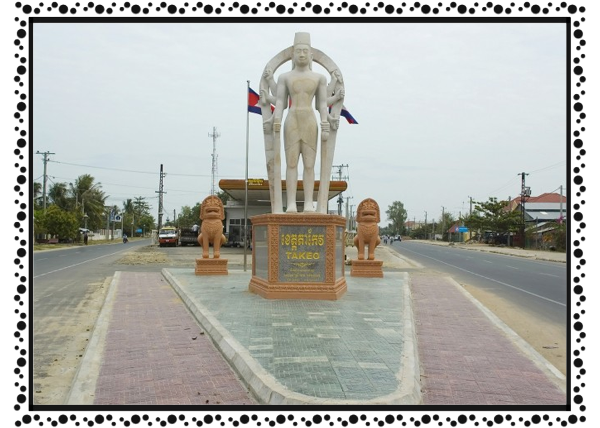

ខេត្ត និងក្រុងនៃព្រះរាជាណាចក្រកម្ពុជា
តាកែវ
 ខេត្តតាកែវ គឺជាខេត្តមួយដែលស្ថិតនៅភាគខាងត្បូងនៃប្រទេសកម្ពុជា។ ស្ថិតនៅខាងលិចទន្លេបាសាក់ ខេត្តតាកែវ មានព្រំប្រទល់ជាប់នឹងខេត្តកំពត ខាងលិចជាប់ ខេត្តកំពង់ស្ពឺខាងជើងឆៀងខាងលិច និងខេត្តកណ្តាលនៅខាងជើងនិងខាងកើត។ ហើយព្រំប្រទល់ភាគខាងត្បូងរបស់ខេត្តគឺព្រំដែនអន្តរជាតិជាមួយវៀតណាម(ខេត្តមាត់ជ្រូក)។ ទីក្រុងខេត្តដែលទើបនឹងត្រូវបានគេស្គាល់ថាជាទីរួមខេត្តដូនកែវ (អតីតហៅថាក្រុងតាកែវ) គឺជាទីក្រុងតូចមួយមានប្រជាជនសរុប ៣៩ ១៨៦ នាក់។ ខេត្តតាកែវគឺជាស្លាកស្នាមនៃវប្បធម៌ខ្មែរ ដោយសារតែជាអតីតនគរវ្នំនិងអាណាចក្រចេនឡាស្ថិតនៅកណ្តាលតំបន់។ខេត្តតាកែវគឺជាខេត្ដមួយស្ថិតនៅភាគខាងត្បូងនៃប្រទេសកម្ពុជា។ ខេត្តនេះមានព្រំប្រទល់ខាងលិចជាប់នឹងខេត្តកំពត ភាគពាយ័ព្យជាប់នឹងខេត្តកំពង់ស្ពឺ ខាងជើងនិងខាងកើតជាប់ខេត្តកណ្ដាល និងភាគខាងត្បូងជាប់ជាមួយព្រំដែនអន្ដរជាតិប្រទេសវៀតណាម។ ខេត្តតាកែវមានផ្ទៃដីសរុប ៣,៦៨០.១៥ គីឡូម៉ែត្កការេ[២]។ ទីរួមខេត្តនៃខេត្តតាកែវគឺក្រុងដូនកែវ ដែលជាក្រុងតូចមួយមានប្រជាជន ៣៩,១៨៦ នាក់។ បើយើងធ្វើដំណើរពីភ្នំពេញទៅកាន់ទីរួមខេត្តតាកែវលើកំណាត់ផ្លូវជាតិលេខ ២ និងលេខ៣ គេនឹងបានឃើញស្ថានភាពប្រជាពលរដ្ឋ ការប្រកបរបររកស៊ីរបស់ពួកគេនៅក្នុងខេត្តនេះ។ មិនតែប៉ុណ្ណោះ គេក៏អាចធ្វើដំណើរតាមផ្លូវជាតិលេខ២ផងដែរ ដែលមានចម្ងាយផ្លូវប្រហែល៧៨ គីឡូម៉ែត្រ។តាមជំរឿនប្រជាជននៅថ្ងៃទី៣ ខែមីនា ឆ្នាំ១៩៩៨ ខេត្តតាកែវមានចំនួន ៧៩០,១៦៨នាក់ និងជំរឿនថ្ងៃទី៣ ខែមីនា ឆ្នាំ២០១៨ ប្រជាជនមានចំនួន ៨៤៤,៩០៦នាក់។ តាមការធ្វើជំរឿនប្រជាជនកម្ពុជានៅថ្ងៃទី៣ ខែមីនា ឆ្នាំ២០១៩ បានបង្ហាញថា ខេត្តតាកែវមានប្រជាជនសរុបចំនួន ៨៩៩,៤៨៥នាក់ និងមានដង់ស៊ីតេចំនួន ២៥២.៥នាក់ក្នុងមួយគីឡូម៉ែត្រការ៉េ។ បើប្រៀបធៀបរវាងចន្លោះឆ្នាំ២០០៨ ដល់ឆ្នាំ២០១៩ មានកើនឡើងចំនួន ០.៥៧%។តាកែវជាខេត្តចំណាស់មួយត្រូវបានគេចាត់ទុកថាជា "ដើមកំណើតនៃអរិយធ៌មខ្មែរ" ដោយសារតែធ្លាប់ជាតំបន់កណ្តាលនៃនគរចេនឡាបន្ទាប់ពីការធ្លាក់ចុះនៃនគរភ្នំ។ ប្រវត្តិសាស្រ្ត ជាច្រើនដែលទាក់ទងនឹងសម័យ អាណាចក្រភ្នំ និងសម័យ ចេនឡា ដោយមាន ប្រាសាទបុរាណជាច្រើនរហូតដល់៣៤ប្រាសាទដែលបានកសាងឡើងមុនសម័យអង្គររវាងសតវត្សទី៥ដល់ទី៨។ សក្ដានុពលភាពសំខាន់ក្នុងខេត្ត នេះគឺវិស័យទេសចរណ៍ ដែលជាប្រភពចំណូលជូនរដ្ឋ និងអាចឱ្យប្រជាពលរដ្ឋទាញរកប្រយោជន៍ពីវិស័យនេះផងដែរ។ តំបន់ទេសចរណ៍សំខាន់ៗក្នុងខេត្តនេះមានភាគច្រើនជាទីតាំងប្រវត្តិសាស្ត្រ ដូចជា ប្រាសាទបុរាណជាដើម ដែលធ្វើឱ្យទេសចរចូលចិត្តមកធ្វើការសិក្សាស្រាវជ្រាវ ព្រមទាំងទទួលនូវអារម្មណ៍បរិសុទ្ធ ពីទេសភាពប្រណីតៗជុំវិញតំបន់ ប្រាសាទបុរាណនោះផងដែរ។តាកែវត្រូវបានគេគិតថាជាកន្លែងកំណើតនៃអរិយធម៌ខ្មែរ។